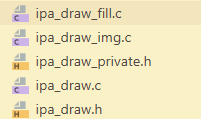

| Date | Description |
|---|---|
| 2025-12-15 | 补充了LVGL相关的内容 |
| 2025-12-07 | 首次创建 |
GD32有一个和STM32的DMA2d相对的外设叫IPA，他有更多的功能，比如缩放，旋转，但是LVGL没有内嵌的支持。
IPA非常难用，它的参数都很抽象，而且需要CPU来计算一些边界条件来阻止IPA访问到你不想要的内存区域。
不是，哥们，为什么不能设计成更简单的方式啊。就像下面的那样，从某个SRC图形复制一个区域到LTDC缓冲区的某个特定位置。
缩放和旋转功能
虽然LVGL没有直接对IPA的支持，但我们可以魔改DMA2D的代码，让它支持IPA。
IPA和DMA2D的寄存器非常相似，只不过命名不同，以及一些新增加的功能。我没有玩那些旋转缩放的功能没有写上去。
拷贝DMA2D的文件，我将其改了名字。我没有设计中断的支持，我听说IPA速度非常快，甚至操作系统切换线程的开销都比等待它完成还要高。
void lv_draw_dma2d_configure_and_start_transfer(const lv_draw_dma2d_configuration_t* conf) {
if (conf->w == 0 || conf->h == 0) return;
while (IPA_CTL & IPA_CTL_TEN)
;
/* number of lines register */
IPA_IMS = (conf->w << 16) | conf->h;
/* output */
/* output memory address register */
IPA_DMADDR = (uint32_t)(uintptr_t) conf->output_address;
/* output offset register */
IPA_DLOFF = conf->output_offset;
/* output pixel format converter control register */
IPA_DPCTL = conf->output_cf;
/* Fill color. Only for mode LV_DRAW_DMA2D_MODE_REGISTER_TO_MEMORY */
IPA_DPV = conf->reg_to_mem_mode_color;
/* foreground */
/* foreground memory address register */
IPA_FMADDR = (uint32_t)(uintptr_t) conf->fg_address;
/* foreground offset register */
IPA_FLOFF = conf->fg_offset;
/* foreground color. only for mem-to-mem with blending and fixed-color foreground */
IPA_FPV = conf->fg_color;
/* foreground pixel format converter control register */
IPA_FPCTL = ((uint32_t)conf->fg_cf) | (conf->fg_alpha << 24) | (conf->fg_alpha_mode << 16);
/* background */
IPA_BMADDR = (uint32_t)(uintptr_t) conf->bg_address;
IPA_BLOFF = conf->bg_offset;
IPA_BPV = conf->bg_color;
IPA_BPCTL = (((uint32_t)conf->bg_cf)) | (conf->bg_alpha << 24) | (conf->bg_alpha_mode << 16);
/* ensure the DMA2D register values are observed before the start transfer bit is set */
__DSB();
/* start the transfer (also set mode and enable transfer complete interrupt) */
IPA_CTL = IPA_CTL_TEN | (((uint32_t)conf->mode) << 16);
}
主要的修改在ipa_draw.c文件中，替换dma2d的时钟启动关闭，主要就是这个绘制的操作了，对着手册上的寄存器改就行。
如下图所示，绿色是原始图像大小，蓝色是要从图像上复制的区域，白色是LTDC缓冲区。
就这个小示例，如果没有特判裁剪区域填写IPA参数，那么IPA要么访问超出原始图像的内存，要么访问超出LTDC缓冲区的内存，前者造成错误的内容，后者在双缓冲的情况下会意外的写到备份缓冲区。
根据上面的canvs示例，我编写了一些辅助填写IPA参数的函数，返回false则是不需要调用IPA绘制。
#pragma once
static inline int Ipa_Min(int a, int b) { return a < b ? a : b; }
static inline int Ipa_Max(int a, int b) { return a > b ? a : b; }
static inline int Ipa_Clamp(int value, int min, int max) { return value < min ? min : (value > max ? max : value); }
struct IpaFillBound {
// @note pixel[x,y] = ram[x + y * w]
// input
const int in_ltdc_w; // LTDC缓冲区内存宽度
const int in_ltdc_h; // LTDC缓冲区内存高度
const int in_x; // 矩形的左上角x坐标
const int in_y; // 矩形的左上角y坐标
const int in_w; // 矩形的宽度
const int in_h; // 矩形的高度
// output for ipa settings
int ltdc_x_offset; // LTDC缓冲区的x偏移
int ltdc_y_offset; // LTDC缓冲区的y偏移
int ltdc_line_offset; // IPA行偏移
int clamp_w; // IPA图形大小
int clamp_h; // IPA图形大小
};
static inline bool IpaFillBound_Eval(struct IpaFillBound* bound) {
int xend = bound->in_x + bound->in_w;
int yend = bound->in_y + bound->in_h;
int x = Ipa_Clamp(bound->in_x, 0, bound->in_ltdc_w);
int y = Ipa_Clamp(bound->in_y, 0, bound->in_ltdc_h);
xend = Ipa_Clamp(xend, 0, bound->in_ltdc_w);
yend = Ipa_Clamp(yend, 0, bound->in_ltdc_h);
// no need to call IPA
if (x == xend || y == yend) return false;
bound->clamp_w = xend - x;
bound->clamp_h = yend - y;
bound->ltdc_x_offset = x;
bound->ltdc_y_offset = y;
bound->ltdc_line_offset = bound->in_ltdc_w - bound->clamp_w;
return true;
}
struct IpaBound {
// input
// @note pixel[x,y] = ram[x + y * w]
const int in_ltdc_w; // LTDC缓冲区内存宽度
const int in_ltdc_h; // LTDC缓冲区内存高度
const int in_dest_x; // 目标矩形的左上角x坐标
const int in_dest_y; // 目标矩形的左上角y坐标
const int in_src_x; // 源图像复制区域的左上角x坐标
const int in_src_y; // 源图像复制区域的左上角y坐标
const int in_src_copy_w; // 源图像复制区域的宽度
const int in_src_copy_h; // 源图像复制区域的高度
const int in_src_w; // 源图像的宽度
const int in_src_h; // 源图像的高度
// output for ipa settings
int ltdc_x_offset; // LTDC缓冲区的x偏移
int ltdc_y_offset; // LTDC缓冲区的y偏移
int ltdc_line_offset; // IPA行偏移
int src_x_offset; // 源图像的x偏移
int src_y_offset; // 源图像的y偏移
int src_line_offset; // IPA源图像行偏移
int clamp_w; // IPA图形大小
int clamp_h; // IPA图形大小
};
static inline bool IpaBound_Eval(struct IpaBound* bound) {
// first clamping src bound
int src_end_x = bound->in_src_x + bound->in_src_copy_w;
int src_end_y = bound->in_src_y + bound->in_src_copy_h;
src_end_x = Ipa_Clamp(src_end_x, 0, bound->in_src_w);
src_end_y = Ipa_Clamp(src_end_y, 0, bound->in_src_h);
int src_x = Ipa_Clamp(bound->in_src_x, 0, bound->in_src_w);
int src_y = Ipa_Clamp(bound->in_src_y, 0, bound->in_src_h);
int src_copy_w = Ipa_Max(src_end_x - src_x, 0);
int src_copy_h = Ipa_Max(src_end_y - src_y, 0);
if (src_copy_w == 0 || src_copy_h == 0) return false;
int dest_x = bound->in_dest_x + src_x - bound->in_src_x;
int dest_y = bound->in_dest_y + src_y - bound->in_src_y;
// get intersection
int x = Ipa_Max(dest_x, 0);
int y = Ipa_Max(dest_y, 0);
int w = Ipa_Min(bound->in_ltdc_w, dest_x + src_copy_w) - x;
int h = Ipa_Min(bound->in_ltdc_h, dest_y + src_copy_h) - y;
w = Ipa_Max(0, w);
h = Ipa_Max(0, h);
// no need to call IPA
if (w == 0 || h == 0) return false;
// output ipa dest bound
bound->clamp_w = w;
bound->clamp_h = h;
bound->ltdc_x_offset = x;
bound->ltdc_y_offset = y;
bound->ltdc_line_offset = bound->in_ltdc_w - w;
// output ipa src bound
bound->src_x_offset = x - bound->in_dest_x + bound->in_src_x;
bound->src_y_offset = y - bound->in_dest_y + bound->in_src_y;
bound->src_line_offset = bound->in_src_w - bound->clamp_w;
return true;
}
还有两个简单的小测试，填充矩形和复制图像。
static void IPA_FillRectange(uint32_t x, uint32_t y, uint32_t w, uint32_t h, uint16_t color) {
struct IpaFillBound b = {
.in_h = h,
.in_ltdc_h = kLcdHeight,
.in_ltdc_w = kLcdWidth,
.in_w = w,
.in_x = x,
.in_y = y
};
if (!IpaFillBound_Eval(&b)) return;
// 图形大小
IPA_IMS = ((b.clamp_w & 0x3ffff) << 16) | b.clamp_h;
// 寄存器颜色值
IPA_DPV = color;
// 目标起始地址
IPA_DMADDR = (uint32_t)(Lcd_Double_GetDrawGram() + b.ltdc_x_offset + b.ltdc_y_offset * b.in_ltdc_w);
// 目标颜色格式
IPA_DPCTL &= ~IPA_DPCTL_DPF;
IPA_DPCTL |= IPA_DPF_RGB565;
// 首行终点与下一行起点的像素间隔
IPA_DLOFF = b.ltdc_line_offset;
// IPA模式
IPA_CTL &= ~IPA_CTL_PFCM;
IPA_CTL |= IPA_CTL_TEN | IPA_FILL_UP_DE;
while (IPA_CTL & IPA_CTL_TEN)
;
Lcd_Double_DrawFinish();
while (!Lcd_Double_CanDraw())
;
}
#define RGB888_TO_RGB565(r, g, b) (((r & 0xf8) << 8) | ((g & 0xfc) << 3) | ((b & 0xf8) >> 3))
constexpr uint16_t black = RGB888_TO_RGB565(0, 0, 0);
constexpr uint16_t white = RGB888_TO_RGB565(255, 255, 255);
constexpr uint16_t grey = RGB888_TO_RGB565(128, 128, 128);
static const uint16_t kTestRGB565ImageData[] = {
black, white, black, white, black, white, black, white,
white, black, white, black, white, black, white, black,
black, white, black, white, black, white, black, white,
white, black, white, black, white, black, white, black,
black, white, black, white, black, white, black, white,
white, black, white, black, white, black, white, black,
black, white, black, white, black, white, black, white,
white, black, white, black, white, black, white, black
};
static void IPA_CopyImage(uint32_t x, uint32_t y, uint32_t w, uint32_t h, const uint16_t* image) {
struct IpaBound b = {
.in_ltdc_w = kLcdWidth,
.in_ltdc_h = kLcdHeight,
.in_dest_x = x,
.in_dest_y = y,
.in_src_x = 0,
.in_src_y = 0,
.in_src_copy_w = w,
.in_src_copy_h = h,
.in_src_w = w,
.in_src_h = h
};
if (!IpaBound_Eval(&b)) return;
// 目标起始地址
IPA_DMADDR = (uint32_t)(Lcd_Double_GetDrawGram() + b.ltdc_x_offset + b.ltdc_y_offset * b.in_ltdc_w);
IPA_FMADDR = (uint32_t)image;
// 图形颜色格式
IPA_FPCTL &= ~IPA_FPCTL_FPF;
IPA_FPCTL |= FOREGROUND_PPF_RGB565;
// 首行终点与下一行起点的像素间隔
IPA_FLOFF = b.src_line_offset;
IPA_DLOFF = b.ltdc_line_offset;
// 图形大小
IPA_IMS = ((b.clamp_w & 0x3ffff) << 16) | b.clamp_h;
// 目标颜色格式
// IPA_DPCTL &= ~IPA_DPCTL_DPF;
// IPA_DPCTL |= IPA_DPF_RGB565;
// IPA模式
IPA_CTL &= ~IPA_CTL_PFCM;
IPA_CTL |= IPA_CTL_TEN | IPA_FGTODE;
while (IPA_CTL & IPA_CTL_TEN)
;
Lcd_Double_DrawFinish();
while (!Lcd_Double_CanDraw())
;
}